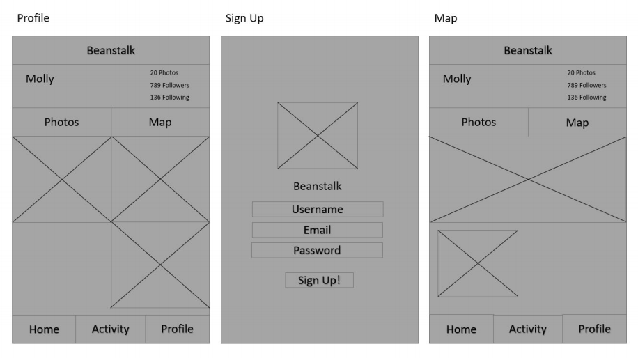

Beanstalk: An Instagram-inspired app
WINTER 2019
Database Systems, UC Davis
Tools: ReactNative, Flask.js, Python, Adobe XD, Prototyping, Persona Development, full-stack development, mobile app development
Beanstalk is an Instagram-inspired app, which includes Instagram’s core features and additional features targeted to motivate users to share exciting adventures. Users are able to upload pictures for their followers, like and comment on posts, search users, locations, and hashtags, and create a personal map for their photos. My main responsibilities while building this app was design and front-end development.

User Research: Building Personas
In order to figure out our app’s design and core features, we had to figure out our target audience by creating user personas. The following personas are the ones we came up with:


Based on our personas, we identified our users as those who enjoyed traveling and sharing their adventures. Our users also wanted to find other places that they hadn't been to, try new foods, and see what their friends were up to. With these aspects in mind we narrowed down core features to Instagram's main features of account creation, post creation, liking and commenting, hashtags, search for users, locations, and hashtags, a following system, and an activity feed. Our changes were an iteration on their UI/UX design and an addtional feature of a personal map for each user.
Low Fidelity Mockups

High Fidelity Mockups


These mockups show our desired theme, style, and specific icons that our users would recognize. Flat colors and few textures would work in line with our desire of the app to be simple to users. We chose an emerald green accent color because it is kind to the eyes, but it also conveys a sense of refinement.
App Flow
To clarify the steps of our app and the different user interactions, we drafted the following user flow diagram. This helped map out possible actions and the user's experience journey throughout Beanstalk.

Final Product
This problem also applies to a designer. One of the most important aspects in design projects is to choose a color scheme for the projects. If the designer doesn't choose the right color for the design, it's likely that the design will be unsuccessful. If a designer sees a color they throughout the day, they should be able to identify the color and use it for future designs.
For these reasons, I decided to implement a mobile app because of its practicality.The purpose of a mobile app makes the action of taking a picture more efficient. When someone sees a color they want to know, users will able to quickly whip out their phone, snap a picture, and figure out the color.
I also decided to make sure the color identification provides users with exact information like color codes, so they would be able to use in their projects or applications. A color scheme generation is an added bonus I decided to implement because I wanted users to feel inspired for their projects. Then, of course I wanted to implement a way to save favorite colors and color schemes because it would help users keep a stash of favorite colors.
Background
Surveying the app store for related work, I found apps that had the general idea of what I was trying but were executed poorly. I knew going into this project that I was not trying to reinvent the wheel, but instead trying to improve it. I believed that Mantis could become a staple on every phone, while the apps on the app store saw it as more of a novelty. The pictures below come from two other color identification apps on the app store.

The one on the left provides minimal information for the user because it only displays the selected color which does not give the user any other information whatsoever. The app on the right employs AR to identify live colors, which is innovative but problematic because the color identification square is always moving, so users can't pinpoint a single color due to minute movements from the hand.
Also the apps on the app store did not allow for the full range of color. If a user identified at any shade of green it would just identify a basic color like “Green” or “Red” instead of something more specific like “Lime” or “Scarlet”. Along with that, the UI only worsened the usability of those apps, since navigation was not intuitive. I had no idea how to get back to using the camera for Color Name AR.
Mantis improved on both of those parts. With the API that I used to identify color, it retrieved the hex, RGB, and CMYK codes for the color that was chosen and the color palette generation; this allowed us to display the exact color that was chosen on your device. Also, the planned UI was very intuitive and flexible. A first-time user could easily navigate the app and understand how to use it. The Color Library implementation also helped users keep track of their favorite colors and palettes so they would be able to use it in the future.
Conceptual Model
The conceptual design of the app was extremely simplistic and consisted of three main components: the camera, upload, and Color Library. By combining these three pieces, I created a unique user experience that solved the problem of being able to analyze, identify, and save colors into palettes. The app allows for user input via the camera or upload option and would then transition to an intermediary color selector page. There, a picker can individually select a color or choose to generate a palette from the dominant colors of the image, allowing for a variety of options. Lastly, the user selection can be saved and accessed within the Color Library allowing for as many color palettes as the user would like to store and re-access.
Prototype
To create the Mantis app, I decided to use the Ionic Framework which is an open-source SDK for hybrid mobile app development, built on AngularJS and Apache Cordova. There were a total of five main pages within the app. The first page consisted of the home page which gave the user an three options: taking a picture, uploading a picture, and navigating to the Color Library.

I wanted the whole app to be colorful because it was an app that related to the notion of colors, so I chose Mantis as the name because it is based on Mantis Shrimp which has twelve color-receptive cones whereas humans have only three. This means that Mantis Shrimp can see colors our brains are not even capable of processing. Thus, the home page’s title is in rainbow and the background is a moving gradient as seen above.
The next page displays the picture that the user chooses, and wherever the user touches on the picture, the color, hex code, and RGB codes will displayed below. This is done with an API built off of AngularJS that specifically spits out the exact color value. This page also includes navigation in the bottom bar which allows the user to navigate to the previous page, save the identified color, and generate a color palette that compliments the identified color. The color palette generator is implemented with the ColorMind REST API, which uses deep learning to learn color styles from photographs, movies, and popular art in order to create aesthetically pleasing color schemes.

The next main page is the Color Library page. This page displays all the colors and palettes that the user has saved, chronologically. I figured that the user would like to access the most recent save so I made sure the page displayed most recent to least recent. I implemented this by using Ionic’s built in Storage plugin, which allows storage of key value pairs, so I could keep track of color or palette information.

Then, within each color or palette listed in the Color Library, the user would be able to click on each listing to see more information. For example, the picture below shows more information of a color, which will have hex, RGB, and CMYK codes. A palette page would display each of the colors in the palette with their respective color codes as well.